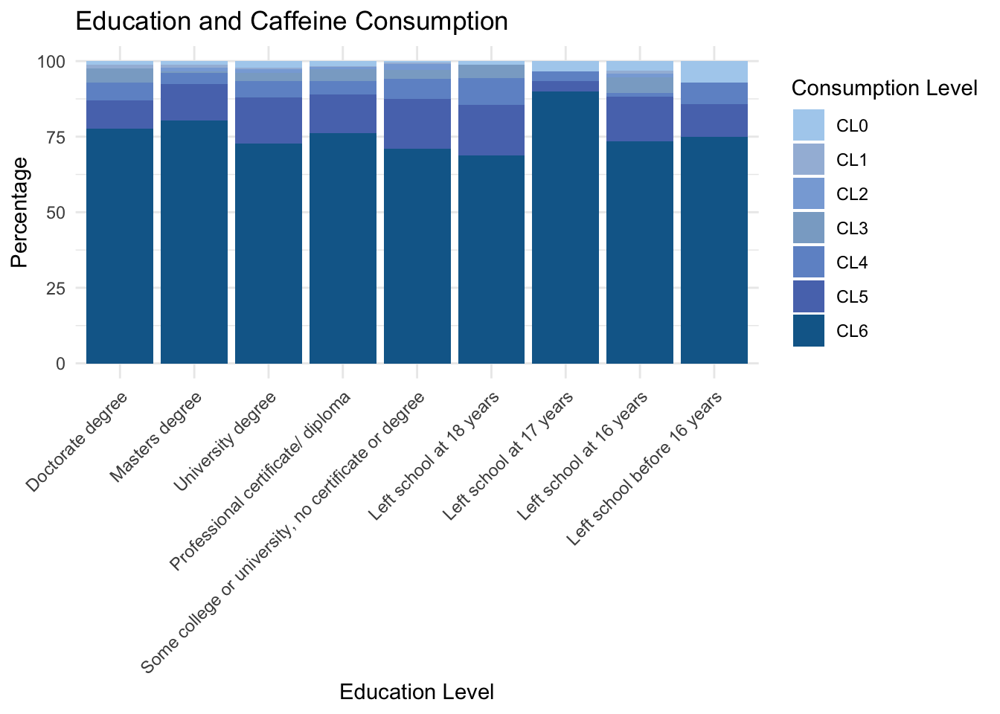
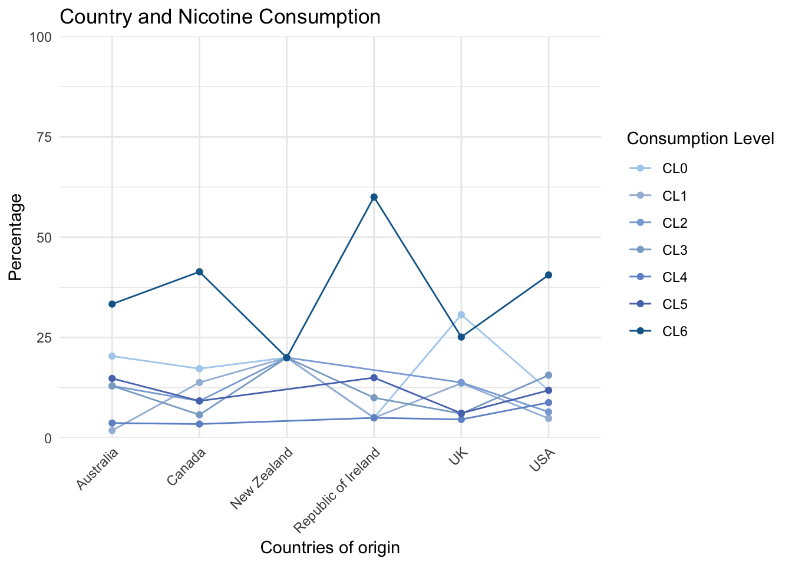
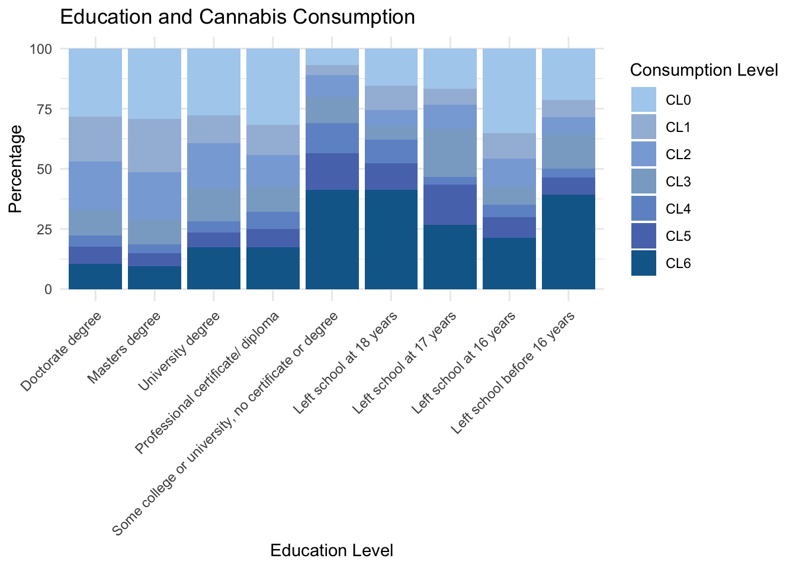
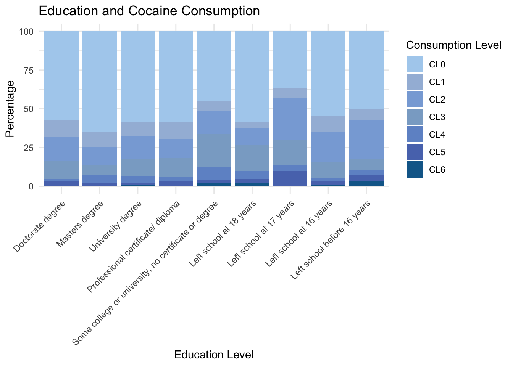

Demographic Characteristics [Univariate Analysis]
How does each demographic characteristic affect the drug consumption patterns?
This univariate analysis page will feature an analysis of four key demographic factors: Age, Gender, Education Level, and Country. The aim is to elucidate their relationship with drug consumption patterns.
For reference: CL0 indicating ‘never used’, CL1 representing ‘used over a decade ago’, CL2 indicating ‘used in the last decade’, CL3 indicating ‘used in the last year’, CL4 representing ‘used in the last month’, CL5 indicating ‘used in the last week’, and CL6 representing ‘used in the last day’.
Note: This dataset contains 1766 participants, with 905 females and 861 males.
Legal Drugs
These three drugs (alcohol, cafeeine and nocotine) are legal in all 6 analyzed countries.
Alcohol
The majority of participants consume alcohol with some regularity, with monthly (CL4), weekly (CL5), or daily (CL6) consumption being the most reported.
Younger people consume more: Younger individuals are more likely to have engaged in alcohol consumption more recently, while older age groups show a higher frequency of alcohol consumption in the more distant past, with a notable decline in recent consumption as age progresses.
Minor difference caused by gender: While overall gender differences in alcohol consumption appear minimal, there are specific points of divergence. Despite these variations, both genders display a similar pattern of alcohol consumption, with the majority having consumed alcohol at some stage and only a small proportion never having consumed alcohol at all.
Minor difference caused by educational background: Alcohol consumption patterns, especially at higher consumption levels, do not differ significantly across different educational levels.
Differences caused by country seen in more recent consumption, with Ireland consumes more: There is a consistent pattern of alcohol non-consumption to distant past consumption across the six compared countries. However, when examining more recent alcohol consumption, distinct differences between countries emerge. Specifically, the Republic of Ireland exhibit highest frequency of consuming alcohol.
Age
There is an observable overall decline in alcohol consumption as age increases. The proportion of individuals who have never consumed alcohol (CL0) diminishes with advancing age. The peak occurrence for those who last consumed alcohol over a decade ago (CL1) is found within the 45-54 age bracket. The age group most likely to have consumed alcohol in the last decade (CL2) is 35-44. For more recent consumption categories—consumed in the last year (CL3), last month (CL4), last week (CL5), and last day (CL6)—the majority are in the youngest age group, 18-24.
Gender
A smaller portion of the surveyed population, 16.68% of females and 19.05% of males, includes individuals who have never consumed alcohol (CL0) or those who last consumed alcohol up to a year ago (CL3). The overall data suggests that the difference in alcohol consumption patterns between genders is negligible. The largest observed difference is in the weekly consumption category (CL5), where 42.98% of females and 37.51% of males reported consumption, yet this difference is not considered significant.

Education
The graph illustrates minimal variations in alcohol consumption across different educational levels. While there is a slight trend suggesting higher alcohol consumption among individuals with higher educational backgrounds, the differences are not significant.
Country
The percentages of individuals abstaining from alcohol consumption (CL0) to those who consumed this decade (CL2) exhibit comparable trends across six countries. However, notable disparities emerge among those consuming alcohol within the recent year (CL3) up to consumption within the last day (CL6). New Zealand stands out for a higher prevalence of alcohol consumption this year or last day, while Canada exhibits a higher frequency of consumption within the month, and the Republic of Ireland sees more individuals consuming within the week.

Caffeine
The majority of participants consume caffeine with some regularity, with daily (CL6) consumption being the most reported.
Younger people consume more: Younger adults exhibiting more frequent usage. This trend suggests that caffeine consumption may decrease as individuals age, particularly after passing the 55-year mark.
Minor difference caused by gender: Both males and females exhibit similar patterns of caffeine consumption, with both genders showing a high level of caffeine intake. There is no significant gender difference influencing the frequency of caffeine consumption.
Certain difference caused by educational background: Individuals who left school at the age of 17 exhibit a higher incidence of caffeine consumption on a more frequent basis compared to other educational background groups. However, it is important to note that this difference could potentially be due to chance, warranting further investigation.
All countries listed consume caffeine, with Ireland ranking as the highest consumer: Each country exhibits a significant frequency of caffeine consumption in the past day, with Ireland notably leading in the highest level of consumption, while other countries surpass Ireland in the second-highest level of consumption.
Age
Last-week (CL5) and last-day (CL6) caffeine consumption is predominantly observed in the younger age brackets, specifically those aged 18-24 and 25-34. There is a noticeable decline in caffeine consumption among individuals in the 55-64 age group. Furthermore, the peak of caffeine consumption ‘over a decade ago’ (CL1) is most evident in the 35-44 age category, which aligns with the finding that caffeine consumption is most prevalent among those currently in the 18-24 and 25-34 age groups.

Gender
The majority of surveyed individuals consume caffeine either on a daily basis (CL6), with 24.64% female and 29.15% male respondents, or on a weekly basis (CL5), with 42.98% females and 37.51% males. However, the gender difference in caffeine consumption frequency is not significantly pronounced.

Education
“Individuals who left school at 17 years of age exhibit notably higher last-day (CL6) caffeine consumption compared to other educational backgrounds, despite similar proportions. Conversely, their last-week (CL5) caffeine consumption is significantly lower compared to other educational groups, despite similar proportions.”

Country
The Republic of Ireland exhibits the highest proportion of individuals consuming caffeine in the last day (CL6), indicating a notable prevalence of high-frequency consumption. Moreover, across all six countries, the overall consumption remains substantial, with each country reporting more than 58% of individuals consuming caffeine at this high frequency.

Nicotine
The majority of participants either report never consuming nicotine or consuming it with some regularity, with non-consumption (CL0) and daily consumption (CL6) being the most frequently reported.
Younger people consume more: Nicotine consumption tends to be higher among younger individuals, with a decreasing trend in regular consumption as age increases. Notably, a majority of individuals over 55 years old exhibit a trend of non-consumption.
Males consume more: A significant gender disparity exists in nicotine consumption, with males consuming more than females.
Higher education leads to less frequent consumption: There is an observed trend where individuals who quit school earlier have a higher proportion of nicotine consumers, while those in higher education exhibit fewer nicotine consumers.
Ireland consumes most, the UK consumes least: Although there are no significant differences observed among countries for average nicotine consumption levels, notable disparities are evident in the extreme consumption categories: individuals consuming nicotine in the last day and those who never consume. The Republic of Ireland shows a significant proportion of individuals consuming nicotine in the last day, whereas the UK exhibits a significant proportion of individuals who never consume nicotine.
Age
The age group 18-24 exhibits a peak in nicotine consumption this month (CL4), while the 25-34 age group peaks at consumption over the decade (CL2), consistent with their overall higher nicotine consumption levels. Similar trends are observed for the 35-44 and 45-54 age groups, albeit with decreasing frequency as age increases. Notably, nicotine consumption over the decade (CL2), this year (CL3), this month (CL4), and this week (CL5) is absent in the 55-64 and 65+ age groups

Gender
At the level of non-consumption (CL0), females comprise 83.56% more than males. Conversely, at the level of consumption within the last day (CL6), males exceed females by 40.26%.
Education
Individuals who left school before 16 years, at 16 years, at 17 years, and at 18 years tend to exhibit a higher percentage of nicotine consumption within the last day (CL6). Conversely, individuals with doctorate degrees, master’s degrees, university degrees, and professional certificates show a higher proportion of non-nicotine consumers (CL0).

Country
The Republic of Ireland exhibits a significantly higher proportion of individuals consuming nicotine within the last day (CL6), while New Zealand has a notably lower proportion. Conversely, the UK shows the highest proportion of individuals not consuming nicotine (CL0), whereas the Republic of Ireland has the lowest.

Controversial Drugs
This drug (cannabis) is legal in two analyzed countries (the United States and Canada) but illegal in four others.
Cannabis
The majority of participants either report never consuming cannabis or consuming it with some regularity, with non-consumption (CL0) and daily consumption (CL6) being the most frequently reported.
Younger people consume more: There is a trend of higher cannabis consumption among younger individuals, which decreases as age increases. Notably, a majority of individuals over 55 years old exhibit a pattern of non-consumption.
Males consume more: There is a significant gender difference in cannabis consumption, with a higher proportion of males consuming cannabis compared to females. Additionally, a majority of females do not consume cannabis.
Higher education lead to increased non-consumption: While no clear trend is observable among consumers, a greater proportion of individuals pursuing higher education report never consuming cannabis.
The USA consumes most, the UK consumes least: While cannabis consumption is prevalent across most countries surveyed, the USA stands out for its higher frequency of consumption. Conversely, the UK is notable for having the largest proportion of individuals who never consume cannabis.
Age
Individuals aged 18-24 are predominantly observed to consume cannabis within the last day (CL6). Conversely, individuals aged 55 or above are absent from consuming cannabis within this decade (CL2), last month (CL4), last week (CL5), and last day (CL6).

Gender
At the level of never consuming cannabis (CL0), females outnumber males by 50.88%. Conversely, at the level of consuming cannabis within the last day (CL6), males outnumber females by 93.75%. Approximately one-third of females report never consuming cannabis, while one-third of males report consuming cannabis within the last day.

Education
Individuals with some college or university education, without a certificate or degree, as well as those who left school at 18 years old, show a slight increase in cannabis consumption within the last day (CL6). Conversely, individuals holding a professional certificate or higher exhibit fewer individuals consuming cannabis within the last day (CL6) and a higher proportion of non-consumers (CL0).

Country
The USA exhibits a slightly higher proportion of individuals consuming cannabis within the last day (CL6), while the UK, which has the highest proportion of non-consumers (CL0), has the lowest proportion of individuals doing so. Meanwhile, New Zealand and the Republic of Ireland show comparable proportions of individuals consuming cannabis within the last day, with both countries exceeding 30% of their surveyed populations.

Illegal Drugs
These two drugs (Cocaine, Heroin) are illegal across all six analyzed countries.
Cocaine
The majority of participants never consume cocaine (CL0).
Younger people consume more: Younger individuals exhibit a higher frequency of cocaine consumption, which decreases with age. Individuals aged 55 and above predominantly indicate non-consumption.
Difference caused by gender only in recent decade consumption: At most consumption levels, the gender difference is not significant, except for the consumption of cocaine this decade. This data indicates that males are more likely to have tried cocaine in the recent 10 years compared to females.
Minor difference caused by educational background: Cocaine consumption patterns do not differ significantly across different educational levels.
UK and New Zealand have highest rate of non-consumption: Frequent cocaine consumption is not common across different countries, with the UK and New Zealand having a higher proportion of non-consumers, while the US has the lowest proportion.
Age
Individuals aged 18-24 exhibit a peak in cocaine consumption within the last week (CL5), while those aged 55 or above show an absence of consumption from this decade (CL3) to the last day (CL6). The majority of individuals aged 25-34 consume cocaine within this decade (CL2), while those aged 35-44 and 45-54 predominantly consumed cocaine in the last decade (CL1).

Gender
Most individuals, comprising 63.09% of females and 47.04% of males, report never consuming cocaine (CL0). While other consumption levels have a similar share between genders, there is a notable disparity in cocaine consumption this decade (CL3), with 74.47% more males than females reporting consumption.
Education
There is no significant difference in cocaine consumption across educational levels. However, individuals who left school at 18 years old and those with master’s degrees tend to have a higher proportion of non-consumers of cocaine (CL0).

Country
The frequency of cocaine consumption is low across all surveyed countries. The UK has a slightly higher proportion of non-consumers (CL0), followed by New Zealand. New Zealand also exhibits the highest rate of individuals consuming cocaine over a decade ago (CL1). By contrast, the US has the lowest proportion of people who never consume cocaine (CL0).

Heroin
The majority of participants never consume heroin (CL0).
Young people consume more: Heroin consumption in recent times decreases as age increases, with individuals over 55 showing a tendency to abstain from heroin consumption.
Minor difference caused by gender: Both males and females show a tendency to not consume heroin, with no significant differences observed between genders.
Minor difference caused by educational background: Heroin consumption patterns do not exhibit significant differences among individuals with varying educational backgrounds.
The UK consumes least: Most countries generally maintain a low level of consumption. The UK stands out with a significant number of non-consumers. Although New Zealand still has some heroin consumers, they typically only consumed it a long time ago.
Age
Individuals aged 18-24 and over 55-64 are absent from consuming heroin over a decade ago (CL1). The majority of individuals aged 18-24 are categorized as consuming heroin last day (CL6) and last month (CL4). Consumption decreases among those aged 25-34, with more individuals categorized as having consumed heroin in the last decade (CL2) or last year (CL3). For individuals aged 35-44 and 45-54, the proportion of those who consumed heroin a decade ago (CL1) gradually increases.

Gender
89.83% of females and 80.14% of males report never consuming heroin (CL0), with no significant gender differences observed across other consumption levels.
Education
Individuals with doctorate degrees, master’s degrees, university degrees, and some professional certificates tend to exhibit a slightly larger proportion of non-consumers of heroin (CL0), although the difference is not significant.

Country
The UK has the largest proportion of people who never consume heroin (CL0), whereas New Zealand has the least. Additionally, New Zealand exhibits a significantly higher proportion of people consuming heroin in the last decade (CL2) compared to other countries.